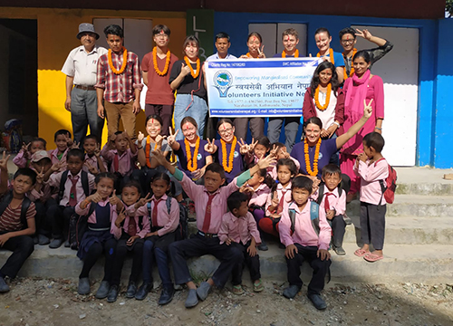

O dobrovolnictví
Chceš vyrazit na delší dobu do zahraničí? Nemáš parťáka nebo tě jen neláká klasická turistika?
Ideální volbou může být dobrovolnictví.
Zde nalezneš tipy, jak najít ideální projekt i potřebné informace před cestou.

Dobrovolnictví je skvělý způsob poznání kultury & nových míst
Život s místní komunitou ti otevře dveře novým perspektivám
Více poznáš sám sebe
Získáš přátele z celého světa
Pěkný pocit ze smysluplné práce
Možnost získat tipy na autentická místa přímo od místních lidí
Kam vyrazit
Česká republika
 Cestuješ a poznáváš místa bez své sociální bubliny
Cestuješ a poznáváš místa bez své sociální bubliny
Poznání opravdového života místních lidí
Po skončení dobrovolnického pobytu můžeš danu zemi procestovat
Cestuješ a poznáváš místa bez své sociální bubliny
Cestuješ a poznáváš místa bez své sociální bubliny
Poznání opravdového života místních lidí
Po skončení dobrovolnického pobytu můžeš danu zemi procestovat
Zahraničí
Snadnější organizace včetně finančního hlediska
SPomáháš ve své zemi
V případě mezinárodní skupiny reprezentuješ Českou republiku